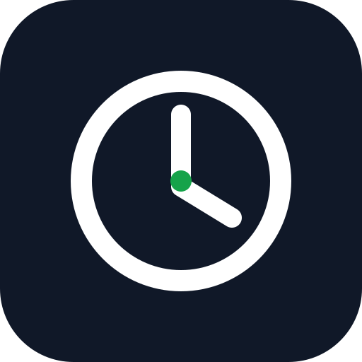

Mi Fichaje
SINCRONIAIA · Control Horario personal
Instalar en este móvil
Una vez instalada tendrás un icono en la pantalla de inicio. Al tocarlo entrarás directamente en tu control horario, como una app.
Preparando instalación…
Si no aparece el botón INSTALAR APP:
En Chrome toca el menú ⋮ y elige Instalar aplicación o Añadir a pantalla de inicio.
En Chrome toca el menú ⋮ y elige Instalar aplicación o Añadir a pantalla de inicio.